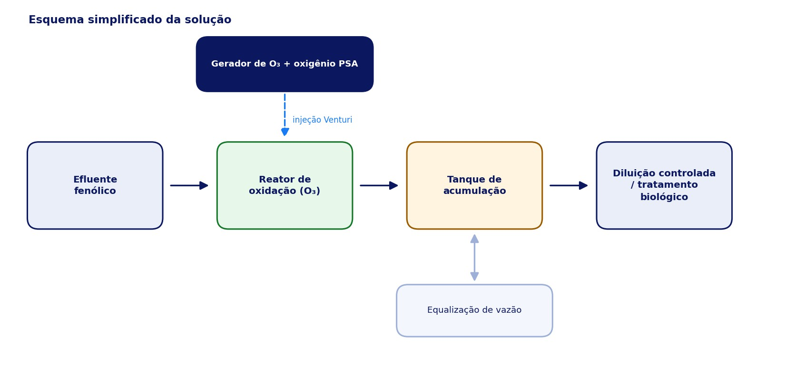
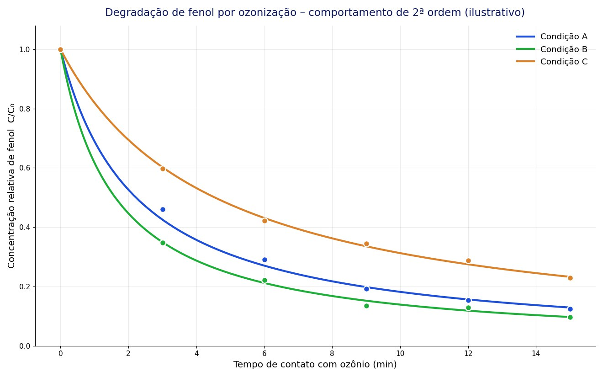
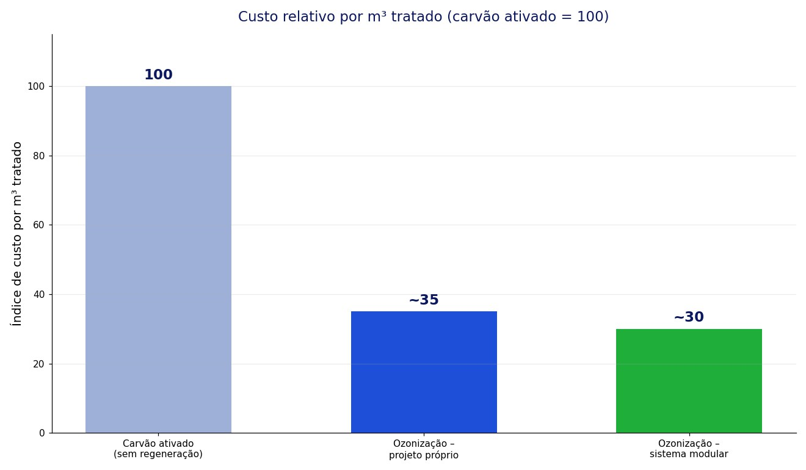

Problema / desafio do cliente
Uma central de tratamento de efluentes e chorume no estado de São Paulo gerava uma corrente secundária (filtrado de desaguamento de lodo) com alta concentração de fenol, várias vezes acima dos limites de lançamento da CETESB e de recebimento em rede da SABESP.
Ao ser misturada às demais linhas da planta, essa corrente elevava a concentração de fenóis no efluente final. O desafio era definir uma rota de remoção tecnicamente eficaz e economicamente viável, compatível com a operação existente e com a grande variabilidade de vazão da planta.
Contexto e características do processo
A planta opera diversas linhas de tratamento. A principal delas recebe chorume transportado por caminhões, sem medição direta de vazão e com forte variação horária: a vazão nos horários de pico chega a ser cerca de duas vezes maior que a da madrugada.
As correntes de retorno internas, entre elas o filtrado fenólico, têm carga praticamente constante. Assim, nos períodos de pouco chorume, essas correntes dominam a mistura e a concentração de fenóis sobe. A planta já contava com um sistema de carvão ativado granular (CAG), cujo desempenho e custo também precisavam ser avaliados.
Diagnóstico e dados analisados
- Carga de fenol: estimada a partir da vazão e da concentração média da corrente, para dimensionar as alternativas de tratamento.
- Carvão ativado existente: com base em revisão da literatura e em balanço de massa, o leito saturava em poucas semanas de operação. Sem regeneração, a reposição e a disposição do carvão resultavam em um custo por m³ tratado elevado, que cresce proporcionalmente com a concentração de fenol.
- Ensaios de ozonização: ozônio gerado com oxigênio PSA foi aplicado em amostras do efluente real, em diferentes vazões de gás. A ozonização removeu mais de 70% do fenol em cerca de 15 minutos de contato.
- Regime de vazão: a curva horária de recebimento de chorume permitiu identificar zonas de baixa, média e alta demanda e quantificar o efeito da diluição sobre a concentração de fenóis.
Metodologia utilizada
- Revisão bibliográfica de adsorção em carvão ativado e de ozonização de compostos fenólicos.
- Balanço de massa e estimativa de custos do sistema de carvão ativado existente (capacidade, tempo de saturação e OPEX).
- Ensaios de bancada de ozonização com oxigênio PSA, variando a vazão de gás.
- Ajuste de modelos cinéticos de ordem zero, primeira e segunda ordem, com seleção por R² e critério de Akaike (AIC).
- Análise estatística da curva horária de vazão e definição de zonas operacionais.
- Dimensionamento estequiométrico do sistema de ozonização e elaboração de PFD, P&ID e lista de equipamentos.
- Definição da filosofia de controle e comparação técnico-econômica de duas alternativas de implantação.
Solução de engenharia desenvolvida
Em vez de buscar a mineralização completa do fenol, que exige muito ozônio, a GETA propôs um sistema de ozonização voltado à oxidação primária: o fenol é convertido em intermediários mais biodegradáveis (ácidos carboxílicos e quinonas), reduzindo drasticamente o consumo de oxidante e o custo operacional.
- Geração de ozônio a partir de oxigênio concentrado (PSA), dimensionada pela estequiometria de oxidação primária, como etapa de pré-tratamento.
- Reator de contato com circuito de recirculação e injeção de ozônio por Venturi, que melhora a transferência gás–líquido sem controle direto do fluxo de gás.
- Tanque de acumulação e homogeneização, com envio controlado do efluente tratado para as linhas de diluição e tratamento.
- Estratégia de equalização e diluição: mais retornos nos períodos de alta disponibilidade de chorume e armazenamento nos de baixa, reduzindo os fenóis em cerca de um terço nas condições médias.
- Controle semiautomático: PID na recirculação via inversor de frequência, válvulas ON/OFF, bombas redundantes e intertravamentos de pressão no sistema de gás e no reator.

Tecnologias e processos envolvidos
Foram comparadas duas tecnologias consagradas para remoção de fenol: a adsorção em carvão ativado granular, já instalada na planta, e a oxidação química por ozônio, um processo oxidativo avançado (POA) em que o O₃ e os radicais hidroxila (•OH) atacam o anel aromático do fenol (fenol → catecol → quinonas → ácidos orgânicos).
Para a implantação, avaliaram-se duas configurações: um sistema de engenharia próprio (gerador por plasma, concentrador PSA e instrumentação industrial completa) e um sistema comercial modular, com skids de ozônio operando em paralelo.
Modelagem, simulação e ferramentas computacionais
Modelagem cinética. Os dados dos ensaios foram ajustados a modelos de ordem zero, primeira e segunda ordem. O modelo de segunda ordem representou melhor a degradação em todas as condições (R² próximo ou acima de 0,9), indicando que a velocidade de reação depende fortemente da concentração de fenol e das condições de transferência de ozônio.

Outras ferramentas: balanços de massa e estequiometria de oxidação, análise estatística da vazão horária (média, desvio padrão e zoneamento) e modelos financeiros de valor presente líquido, taxa interna de retorno e custo nivelado. Ajustes e gráficos foram feitos em Python.
Resultados obtidos
- Ozonização com mais de 70% de remoção de fenol em cerca de 15 minutos nos ensaios de bancada, com cinética de segunda ordem bem ajustada.
- Sistema dimensionado como pré-tratamento, priorizando a redução do fenol e o aumento da biodegradabilidade em vez da mineralização completa.
- Estratégia de equalização e diluição capaz de reduzir os fenóis em cerca de um terço nas condições médias de operação.
- Custo por m³ tratado com ozonização cerca de 3 vezes menor que o do carvão ativado sem regeneração.
- Recomendação de implantação da alternativa modular, com cronograma estimado de cerca de 4 a 5 meses.
CAPEX/OPEX e análise técnico-econômica

| Critério | Projeto próprio | Sistema modular |
|---|---|---|
| Investimento (CAPEX) | Maior | Cerca de 35–40% menor |
| Custo nivelado por m³ | Baixo | O mais baixo |
| Robustez e vida útil | Maior | Moderada |
| Expansão | Sob projeto | Por adição de módulos |
A análise considerou CAPEX com montagem e contingência, cenários de financiamento bancário de 2 e 5 anos, valor presente líquido, taxa interna de retorno e custo nivelado de tratamento. Como é típico em infraestrutura ambiental, o retorno do projeto está principalmente na conformidade legal e na mitigação de custos e passivos.
A alternativa modular foi recomendada por menor investimento, menor custo nivelado e menor risco de execução. O projeto próprio permanece como opção de maior robustez construtiva, indicada quando durabilidade e customização forem prioritárias.
Escopo e responsabilidades da GETA
A GETA atuou na supervisão técnica do projeto, sendo responsável por:
- diagnóstico do problema, balanços de massa e avaliação do sistema de carvão ativado existente;
- planejamento e análise dos ensaios de ozonização e modelagem cinética;
- bases de projeto, PFD, P&ID, lista de equipamentos e filosofia de controle;
- estratégia de equalização e diluição a partir dos dados de vazão da planta;
- análise técnico-econômica comparativa, recomendação final e cronograma de implantação.
Os dados operacionais e a localização das unidades foram definidos em conjunto com a equipe do cliente; os custos de equipamentos foram baseados em orçamentos de fornecedores.
Principais entregáveis
- Relatório técnico de tecnologias e bases de projeto para tratamento de fenol.
- Avaliação do carvão ativado: capacidade de adsorção, tempo de saturação e OPEX.
- Resultados dos ensaios de ozonização e modelos cinéticos ajustados.
- Curva representativa de vazão diária e estratégia de equalização e diluição.
- PFD, P&ID e lista de equipamentos com custos estimados.
- Filosofia de controle com laços de vazão, recirculação, injeção de ozônio, pressão e segurança.
- Comparativo técnico entre as alternativas e análise financeira (CAPEX, financiamento, VPL, TIR e custo nivelado).
- Cronograma de implantação e proposta preliminar de layout.
Galeria
Dados e gráficos apresentados de forma ilustrativa para preservar a confidencialidade do cliente.